sims <- c("rcp45" = rcp45, "rcp85" = rcp85, along = "scenario")How To
Dependencies
To work with NETCDF data in R, you’ll need the stars and sf packages. We’ll also use dplyr (from the tidyverse) for data wrangling and ggplot2 for visuals. Additionally, the lubridate package makes working with dates easier, while here takes care of relative file paths. At last, we’ll need purrr, tidyr and forcats (all of them from the tidyverse) to create some intermediate plots in the end.
Dependencies are defined using two commands: install.packages and library
We’ll make this easier by using pacman, which will do all of that as once for as many packages as we like.
Reading NETCDF files
The stars and sf packages provide a simple interface to work with high-dimensional geographical data.
First, we’ll read data from both scenarios.
Then, we’ll combine them into one single object
…with an additional dimension scenario to be able to filter later on.
A stars object is a high-dimensional raster object - a “data cube”, to quote the package author. When printing it to the console, we can see that our data consists of 5 variables: SUIT_E to SUIT_L, each one a suitability index for early (SUIT_E) up until late (SUIT_L) varieties, ranging from 0 to 1. We also see that the object contains 4 dimensions: LON and LAT for grid cell centroids, a timestamp for each year from 1980 to 2099, and our scenario variable.
sims stars object with 4 dimensions and 5 attributes
attribute(s), summary of first 1e+05 cells:
Min. 1st Qu. Median Mean 3rd Qu. Max. NA's
SUIT_E 0 0 0.11735000 0.2726550 0.5338844 0.9941708 39448
SUIT_EM 0 0 0.09193333 0.2766421 0.5672708 0.9995833 39448
SUIT_M 0 0 0.04447917 0.2324097 0.4491583 0.9943750 39448
SUIT_ML 0 0 0.00000000 0.2090158 0.3856000 0.9897917 39448
SUIT_L 0 0 0.00000000 0.1942184 0.3217063 0.9933333 39448
dimension(s):
from to offset delta refsys point
LON 1 421 -10.61 0.1111 WGS 84 NA
LAT 1 241 34.28 0.1111 WGS 84 NA
TIME 1 120 NA NA POSIXct FALSE
scenario 1 2 NA NA NA NA
values x/y
LON NULL [x]
LAT NULL [y]
TIME 1980-06-01 12:00:00,...,2099-06-02 12:00:00
scenario rcp45, rcp85 Working with data cubes
When dealing with a data cube, you can either manipulate it directly or first extract a slice, convert it to a lower-dimensional data frame (a simple-features tibble, to be precise) and then decide where to go next. Usually, you’ll want to go for the second, much simpler option.
sims %>%
filter(year(TIME) == 2024,
scenario == "rcp45") %>%
st_as_sf()Simple feature collection with 61368 features and 5 fields
Geometry type: POLYGON
Dimension: XY
Bounding box: xmin: -10.61111 ymin: 34.27778 xmax: 36.16667 ymax: 61.05556
Geodetic CRS: WGS 84
First 10 features:
SUIT_E SUIT_EM SUIT_M SUIT_ML SUIT_L
1 0.06460833 0.173958333 0.310829167 0.44530833 0.5167292
2 0.01335000 0.068850000 0.144983333 0.30913333 0.4443417
3 0.00000000 0.036366667 0.076608333 0.21319167 0.3622042
4 0.00000000 0.014600000 0.045233333 0.16200000 0.3254458
5 0.00000000 0.004533333 0.026783333 0.13840000 0.2962000
6 0.00000000 0.000000000 0.007125000 0.10080000 0.2319500
7 0.00000000 0.000000000 0.001666667 0.08007500 0.1928750
8 0.00000000 0.000000000 0.000000000 0.06415000 0.1743417
9 0.00000000 0.000000000 0.000000000 0.06161667 0.1769917
10 0.00000000 0.000000000 0.000000000 0.06445833 0.1778917
geometry
1 POLYGON ((-6.722222 34.2777...
2 POLYGON ((-6.611111 34.2777...
3 POLYGON ((-6.5 34.27778, -6...
4 POLYGON ((-6.388889 34.2777...
5 POLYGON ((-6.277778 34.2777...
6 POLYGON ((-6.166667 34.2777...
7 POLYGON ((-6.055556 34.2777...
8 POLYGON ((-5.944444 34.2777...
9 POLYGON ((-5.833333 34.2777...
10 POLYGON ((-5.722222 34.2777...You could also extract data for multiple years or scenarios:
sims %>%
filter(year(TIME) %in% c(2024, 2099)) %>%
st_as_sf()Simple feature collection with 61368 features and 20 fields
Geometry type: POLYGON
Dimension: XY
Bounding box: xmin: -10.61111 ymin: 34.27778 xmax: 36.16667 ymax: 61.05556
Geodetic CRS: WGS 84
First 10 features:
SUIT_E.V1 SUIT_E.V2 SUIT_E.V3 SUIT_E.V4 SUIT_EM.V1 SUIT_EM.V2 SUIT_EM.V3
1 0.06460833 0 0.0138 0.000000 0.173958333 0 0.06558333
2 0.01335000 0 0.0000 0.000000 0.068850000 0 0.00855000
3 0.00000000 0 0.0000 0.000000 0.036366667 0 0.00180000
4 0.00000000 0 0.0000 0.000000 0.014600000 0 0.00000000
5 0.00000000 0 0.0000 0.000000 0.004533333 0 0.00000000
6 0.00000000 0 0.0000 0.000000 0.000000000 0 0.00000000
7 0.00000000 0 0.0000 0.000125 0.000000000 0 0.00000000
8 0.00000000 0 0.0000 0.000000 0.000000000 0 0.00000000
9 0.00000000 0 0.0000 0.000000 0.000000000 0 0.00000000
10 0.00000000 0 0.0000 0.000000 0.000000000 0 0.00000000
SUIT_EM.V4 SUIT_M.V1 SUIT_M.V2 SUIT_M.V3 SUIT_M.V4 SUIT_ML.V1
1 0.0078000000 0.310829167 0.0078 0.170150000 0.01066667 0.44530833
2 0.0000000000 0.144983333 0.0018 0.043975000 0.00000000 0.30913333
3 0.0000000000 0.076608333 0.0000 0.015350000 0.00000000 0.21319167
4 0.0018000000 0.045233333 0.0000 0.004583333 0.00000000 0.16200000
5 0.0038333333 0.026783333 0.0000 0.000625000 0.00000000 0.13840000
6 0.0043333333 0.007125000 0.0000 0.000000000 0.00000000 0.10080000
7 0.0013750000 0.001666667 0.0000 0.000000000 0.00000000 0.08007500
8 0.0000000000 0.000000000 0.0000 0.000000000 0.00070000 0.06415000
9 0.0000000000 0.000000000 0.0000 0.000000000 0.00090000 0.06161667
10 0.0007666667 0.000000000 0.0000 0.000000000 0.00135000 0.06445833
SUIT_ML.V2 SUIT_ML.V3 SUIT_ML.V4 SUIT_L.V1 SUIT_L.V2 SUIT_L.V3 SUIT_L.V4
1 0.089250000 0.35039167 0.07135000 0.5167292 0.26231667 0.5138917 0.162241667
2 0.037000000 0.19840000 0.03140000 0.4443417 0.17854167 0.3857083 0.056900000
3 0.017866667 0.12526667 0.02340000 0.3622042 0.11025000 0.2883167 0.041900000
4 0.011125000 0.09044167 0.02336667 0.3254458 0.07601250 0.2342000 0.036833333
5 0.008666667 0.06870833 0.01995000 0.2962000 0.05725417 0.2020292 0.030800000
6 0.005850000 0.04095833 0.01497500 0.2319500 0.04188333 0.1565917 0.021158333
7 0.005400000 0.02885833 0.00580000 0.1928750 0.03435000 0.1280667 0.006041667
8 0.005400000 0.02560000 0.00000000 0.1743417 0.03393333 0.1191583 0.000000000
9 0.008108333 0.03129167 0.00175000 0.1769917 0.03428333 0.1286917 0.003000000
10 0.008950000 0.03601667 0.00362500 0.1778917 0.03406667 0.1394833 0.005920833
geometry
1 POLYGON ((-6.722222 34.2777...
2 POLYGON ((-6.611111 34.2777...
3 POLYGON ((-6.5 34.27778, -6...
4 POLYGON ((-6.388889 34.2777...
5 POLYGON ((-6.277778 34.2777...
6 POLYGON ((-6.166667 34.2777...
7 POLYGON ((-6.055556 34.2777...
8 POLYGON ((-5.944444 34.2777...
9 POLYGON ((-5.833333 34.2777...
10 POLYGON ((-5.722222 34.2777...But since the algorithm needs to merge your slice into a two-dimensional data frame, you’ll end up with lots of numbered columns. To avoid this, set long = TRUE. The result is a data frame in long format with additional columns to identify each individual data point.
sims %>%
filter(year(TIME) %in% c(2024, 2099)) %>%
st_as_sf(long = TRUE)Simple feature collection with 245472 features and 7 fields
Geometry type: POLYGON
Dimension: XY
Bounding box: xmin: -10.38889 ymin: 34.27778 xmax: 36.16667 ymax: 61.05556
Geodetic CRS: WGS 84
First 10 features:
TIME scenario SUIT_E SUIT_EM SUIT_M SUIT_ML
1 2024-06-01 12:00:00 rcp45 0.06460833 0.173958333 0.310829167 0.44530833
2 2024-06-01 12:00:00 rcp45 0.01335000 0.068850000 0.144983333 0.30913333
3 2024-06-01 12:00:00 rcp45 0.00000000 0.036366667 0.076608333 0.21319167
4 2024-06-01 12:00:00 rcp45 0.00000000 0.014600000 0.045233333 0.16200000
5 2024-06-01 12:00:00 rcp45 0.00000000 0.004533333 0.026783333 0.13840000
6 2024-06-01 12:00:00 rcp45 0.00000000 0.000000000 0.007125000 0.10080000
7 2024-06-01 12:00:00 rcp45 0.00000000 0.000000000 0.001666667 0.08007500
8 2024-06-01 12:00:00 rcp45 0.00000000 0.000000000 0.000000000 0.06415000
9 2024-06-01 12:00:00 rcp45 0.00000000 0.000000000 0.000000000 0.06161667
10 2024-06-01 12:00:00 rcp45 0.00000000 0.000000000 0.000000000 0.06445833
SUIT_L geometry
1 0.5167292 POLYGON ((-6.722222 34.2777...
2 0.4443417 POLYGON ((-6.611111 34.2777...
3 0.3622042 POLYGON ((-6.5 34.27778, -6...
4 0.3254458 POLYGON ((-6.388889 34.2777...
5 0.2962000 POLYGON ((-6.277778 34.2777...
6 0.2319500 POLYGON ((-6.166667 34.2777...
7 0.1928750 POLYGON ((-6.055556 34.2777...
8 0.1743417 POLYGON ((-5.944444 34.2777...
9 0.1769917 POLYGON ((-5.833333 34.2777...
10 0.1778917 POLYGON ((-5.722222 34.2777...Our dataset contains predictions for grid cells all over europe. Let’s extract only values for grid cells within Germany. We’ll do this in three steps. First, we crop our stars object to the bounding box of Germany. Then we grab all data points for the year 2024 within a RCP4.5-scenario and reduce the dimensions, just as before. Lastly, we “cut out” the correct shape.
Let’s load a polygon of Germany
…and use it:
Plotting geodata
Let’s take a look at the result. We’ll pass it to ggplot and use geom_sf to plot all grid cells.
my_slice %>%
ggplot() +
geom_sf()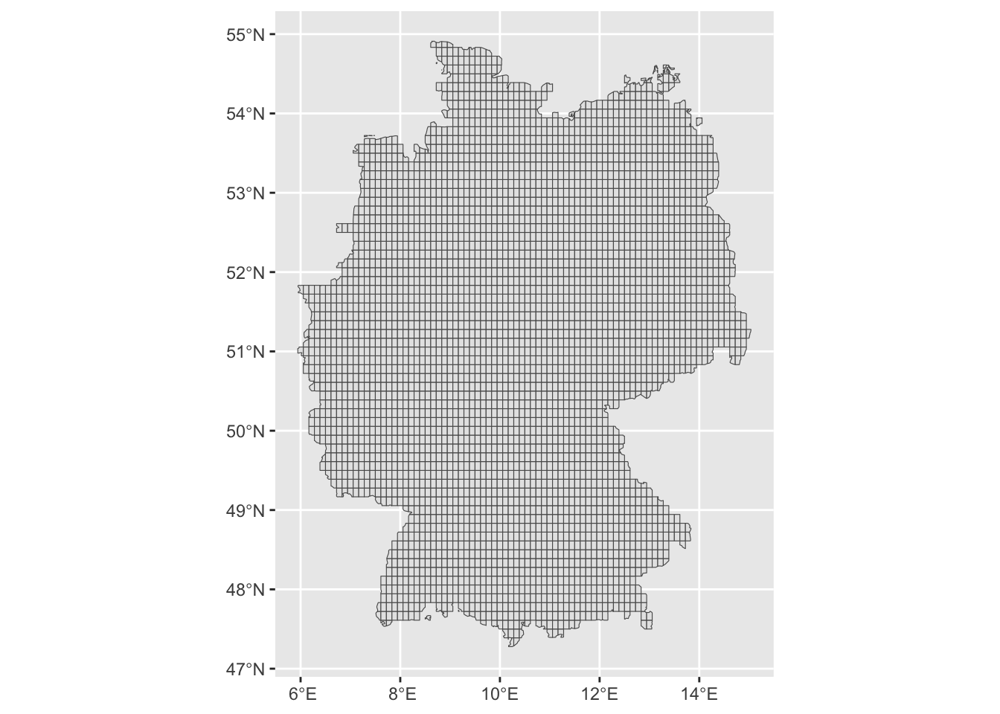
Easy! Just remember that ggplot uses + instead of %>% for historical reasons.
Now let’s add some color. Where is the climate suitable for early wine variations?
my_slice %>%
ggplot() +
geom_sf(aes(fill = SUIT_E))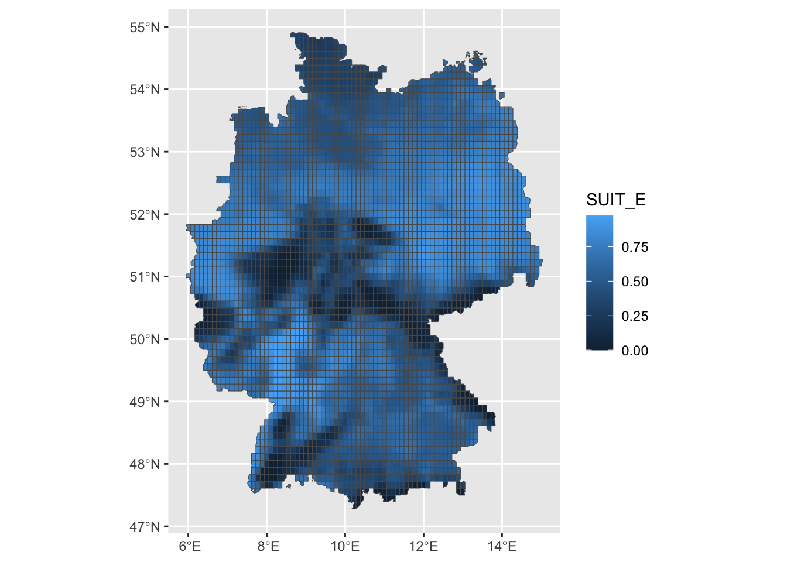
Let’s get rid of the gridlines. Normally, you would do this by setting color = NA or lwd = 0 within geom_sf - but this does not work, it’s a known bug. Instead, set color to use the same variable as fill:
my_slice %>%
ggplot() +
geom_sf(aes(fill = SUIT_E, color = SUIT_E))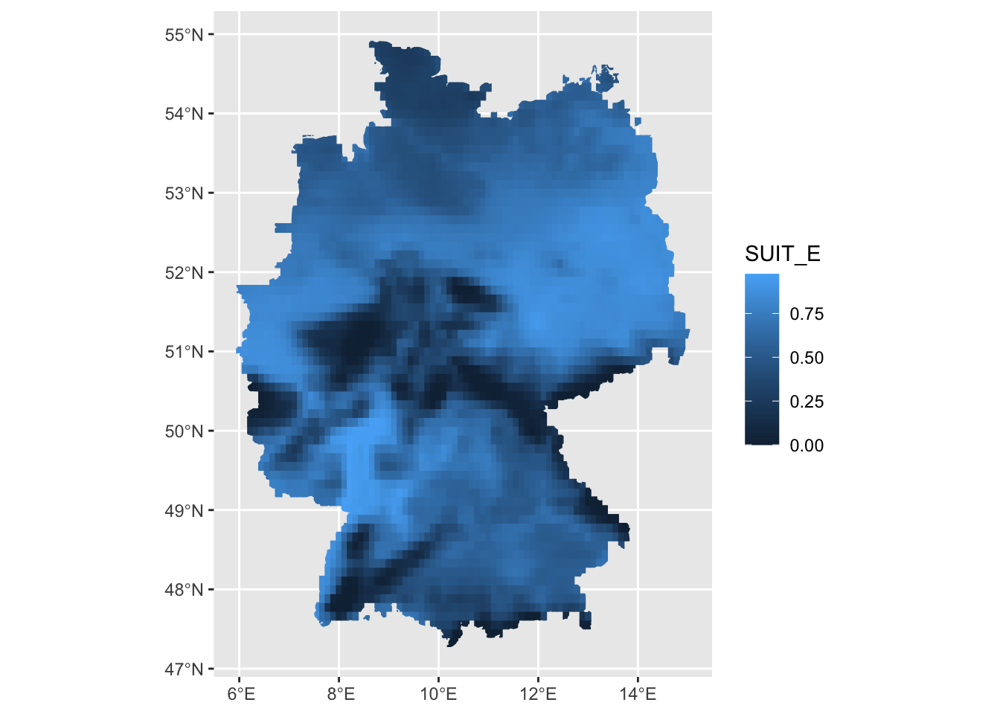
Let’s add some basic styles:
my_slice %>%
ggplot() +
geom_sf(aes(fill = SUIT_E, color = SUIT_E)) +
scale_fill_continuous(limits = c(0, 1)) +
scale_color_continuous(limits = c(0, 1)) +
labs(title = "Suitability for early wines in 2050",
subtitle = "at + 2.6°C until the end of the century",
fill = NULL,
color = NULL) +
theme_void()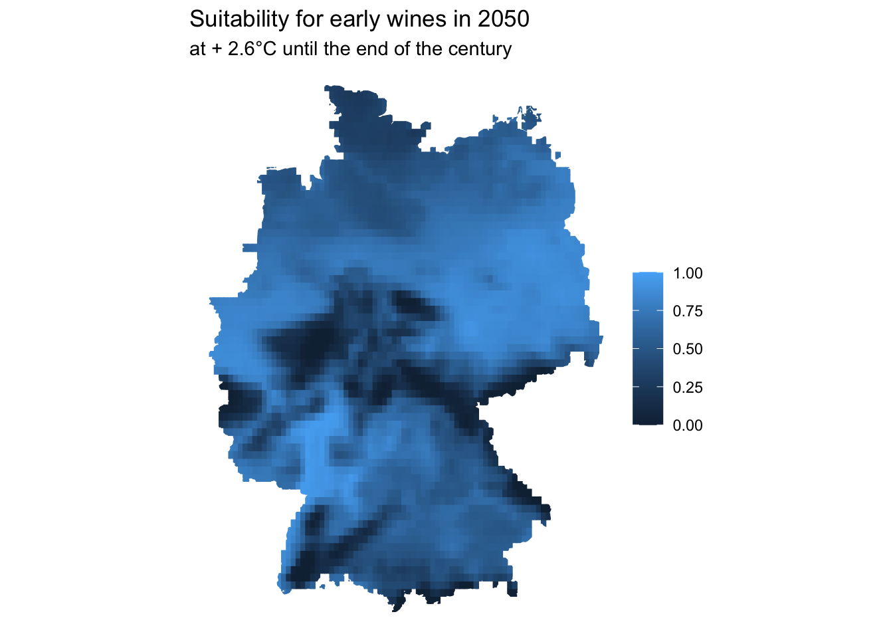
Choosing the right metric
Since everything from 0.65 upwards is considered suitable, you might instead go for binary color coding.
my_slice %>%
mutate(suit = ifelse(SUIT_E < 0.65,
FALSE,
TRUE)) %>%
ggplot() +
geom_sf(aes(fill = suit, color = suit)) +
scale_fill_discrete(labels = c("Not suitable", "Suitable")) +
scale_color_discrete(labels = c("Not suitable", "Suitable")) +
labs(title = "Where early wines could grow in 2050",
subtitle = "at + 2.6°C until the end of the century",
fill = NULL,
color = NULL) +
theme_void()
Or you might choose a diverging gradient with 0.65 as a middle point (alas, you should definitely go for nicer colors!):
my_slice %>%
ggplot() +
geom_sf(aes(fill = SUIT_E, color = SUIT_E)) +
scale_color_gradient2(
low = "blue",
mid = "white",
high = "red",
midpoint = 0.65,
limits = c(0, 1)
) +
scale_fill_gradient2(
low = "blue",
mid = "white",
high = "red",
midpoint = 0.65,
limits = c(0, 1)
) +
labs(title = "Suitability for early wines in 2050",
subtitle = "at + 2.6°C until the end of the century",
fill = NULL,
color = NULL) +
theme_void()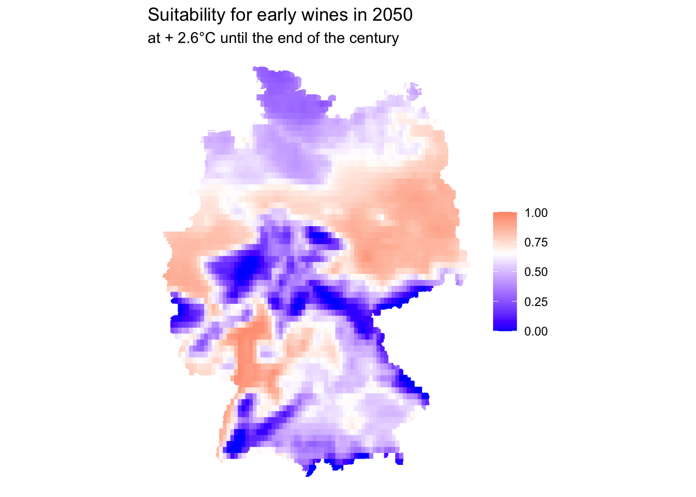
Maybe you want to know how many variations you can cultivate in different regions? Let’s create a score and add state geometries for a better orientation
First, we read in the state geometries.
states <- read_sf(here("src/data/raw/vg2500_12-31.gk3.shape/vg2500/VG2500_LAN.shp")) %>%
filter(GF == 9) %>%
st_transform(4326)Then we create the score and add the state geometries as an additional layer.
my_slice %>%
mutate(across(SUIT_E:SUIT_L, \(variable) variable >= 0.65),
# `as.factor` so ggplot treats it as a categorical variable
score = as.factor(SUIT_E + SUIT_EM + SUIT_M + SUIT_ML + SUIT_L)) %>%
ggplot() +
geom_sf(aes(fill = score, color = score)) +
geom_sf(data = states, fill = NA) +
scale_fill_brewer(palette = "Greens") +
scale_color_brewer(palette = "Greens") +
labs(title = "Wine Variability in 2050",
subtitle = "at + 2.6°C until the end of the century",
fill = NULL,
color = NULL) +
theme_void()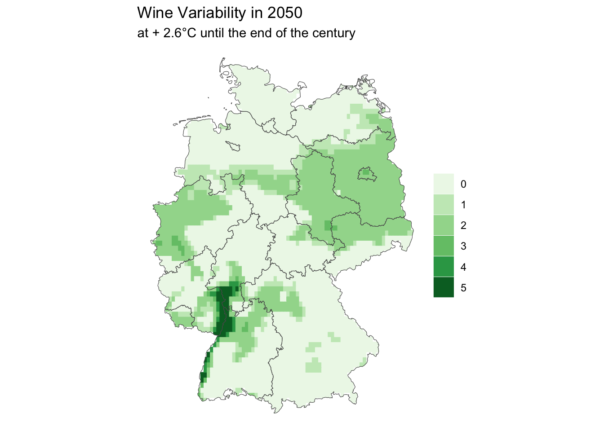
Taking a step back, let’s try to map our estimates to organizational units. First, we aggregate mean predictions at the level of municipalities (“Landkreise”).
Then, we grab a time-slice of our data cube, recreate the variablity score and plot it as before. Important sidenote: 18 municipalities could not be aggregated, presumably because they’re too small.
scenarios_agg %>%
filter(scenario == "rcp45",
year(TIME) == 2050) %>%
st_as_sf() %>%
mutate(across(SUIT_E:SUIT_L, \(variable) variable >= 0.65),
score = as.factor(SUIT_E + SUIT_EM + SUIT_M + SUIT_ML + SUIT_L)) %>%
ggplot() +
geom_sf(aes(fill = score, color = score)) +
geom_sf(data = states, fill = NA) +
# add municipalites as a third layer
geom_sf(data = krs, fill = NA, lwd = 0.1) +
scale_fill_brewer(palette = "Greens", na.value = "red") +
scale_color_brewer(palette = "Greens", na.value = "red") +
labs(title = "Wine Variability in 2050",
subtitle = "at + 2.6°C until the end of the century",
fill = NULL,
color = NULL) +
theme_void()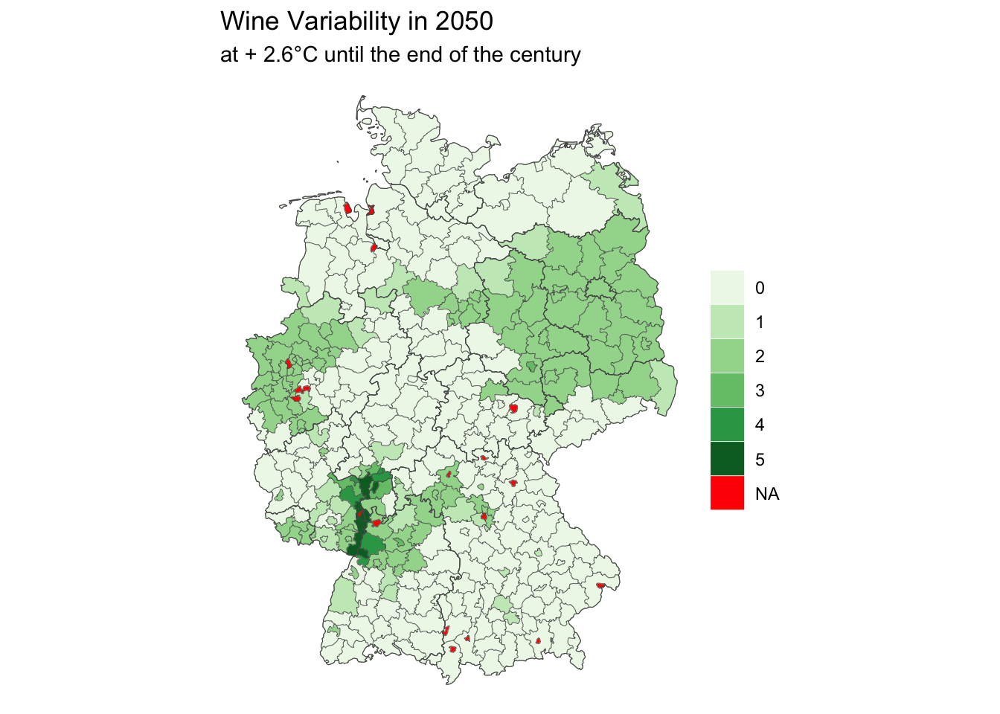
Comparing time series
At last, let’s compare suitability over time. We grab data for the years 2024 and 2050 within the RCP45 scenario and compare the evolution for all municipalities in Germany. This works almost identical to before - you only need to grab an additional ‘time slice’ and plot it using facet_wrap. For simplicity, we’ll just show suitability indices for early wines.
scenarios_agg %>%
filter(scenario == "rcp45",
year(TIME) %in% c(2024, 2050)) %>%
st_as_sf(long = TRUE) %>%
ggplot() +
geom_sf(aes(fill = SUIT_E)) +
facet_wrap(~ year(TIME))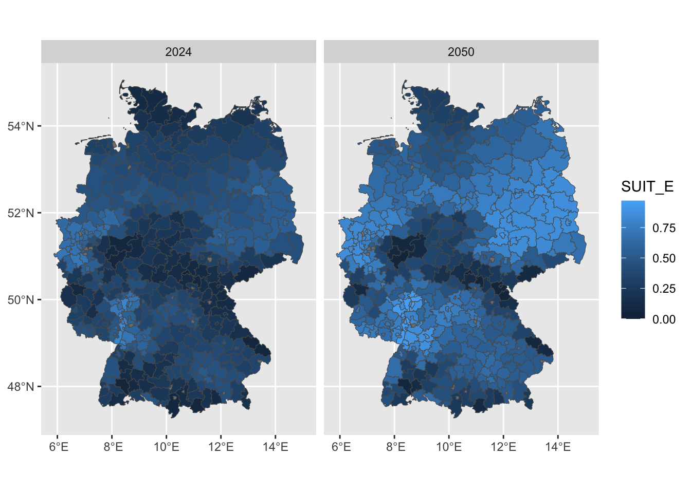
Beware, advanced: If you want to compare variablity scores, you would need to use some magic from the purrr magic to split your data into two sets, recreate the score while mapping over the two sets, then combine them back together and plot:
scenarios_agg %>%
filter(scenario == "rcp45",
year(TIME) %in% c(2024, 2050)) %>%
st_as_sf(long = TRUE) %>% # don't forget to specifically convert to long format
group_split(TIME) %>%
map(\(df) mutate(df,
across(SUIT_E:SUIT_L, \(variable) variable >= 0.65),
score = as.factor(SUIT_E + SUIT_EM + SUIT_M + SUIT_ML + SUIT_L))) %>%
bind_rows() %>%
ggplot() +
geom_sf(aes(fill = score, color = score)) +
geom_sf(data = states, fill = NA) +
geom_sf(data = krs, fill = NA, lwd = 0.1) +
scale_fill_brewer(palette = "Greens", na.value = "red") +
scale_color_brewer(palette = "Greens", na.value = "red") +
labs(title = "Wine Variability over time",
caption = "at + 2.6°C until the end of the century",
fill = NULL,
color = NULL) +
facet_wrap(~ year(TIME)) +
theme(axis.ticks = element_blank(),
axis.text = element_blank(),
panel.grid = element_blank(),
panel.background = element_blank())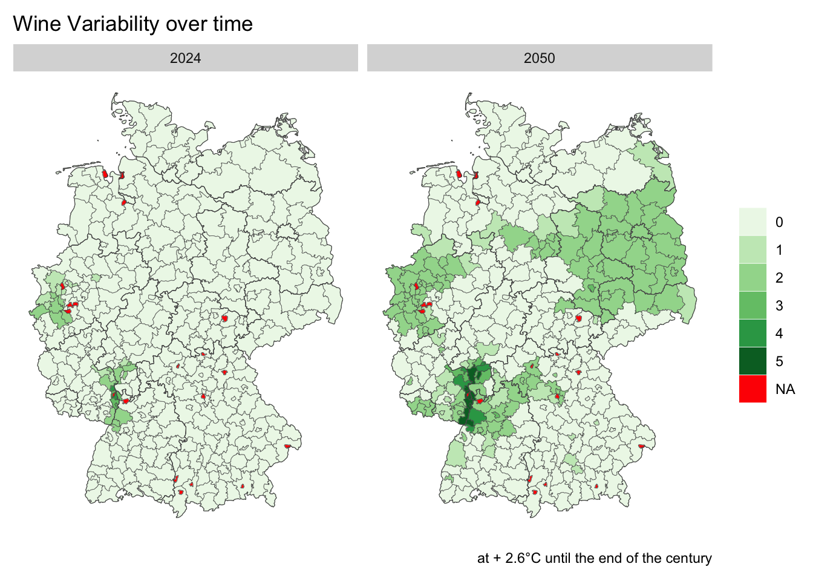
You might also want to inspect evolution over time in one specific municipality - for example for Berlin. We can extract all values for this geometry using st_extract, then plot a line graph:
berlin <- krs %>%
filter(GEN == "Berlin")
scenarios_agg %>%
st_extract(berlin) %>%
filter(scenario == "rcp45") %>%
st_as_sf(long = TRUE) %>%
mutate(year = year(TIME)) %>%
ggplot() +
geom_line(aes(x = year, y = SUIT_E))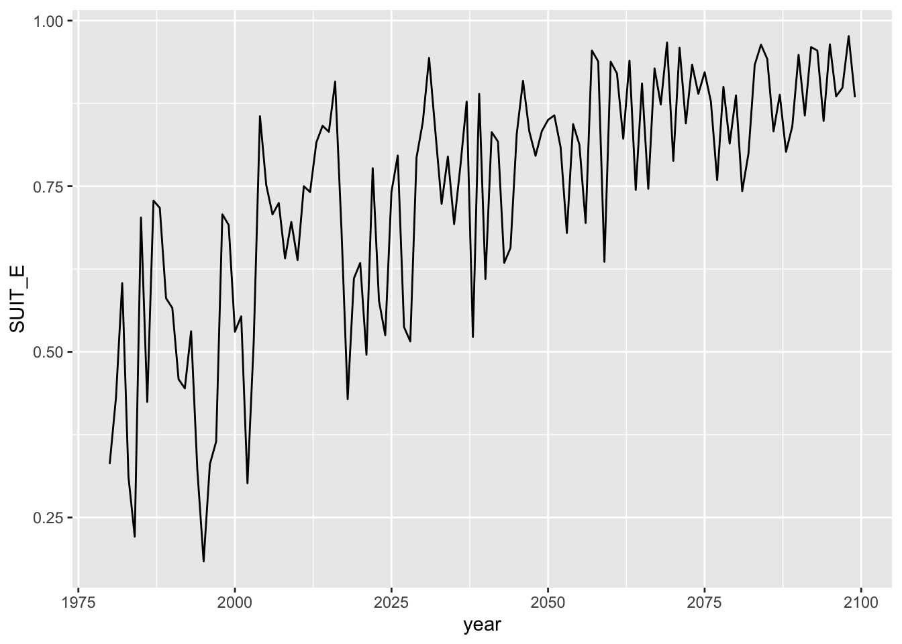
What about Berlin’s evolution of suitabilities in for all varieties? Just pivot the different suitabilities longer:
pivotted <- scenarios_agg %>%
st_extract(berlin) %>%
filter(scenario == "rcp45") %>%
st_as_sf(long = TRUE) %>%
mutate(year = year(TIME)) %>%
pivot_longer(SUIT_E:SUIT_L, names_to = "variety", values_to = "suitability")
pivottedSimple feature collection with 600 features and 5 fields
Geometry type: MULTIPOLYGON
Dimension: XY
Bounding box: xmin: 13.0882 ymin: 52.34182 xmax: 13.7606 ymax: 52.66972
Geodetic CRS: WGS 84
# A tibble: 600 × 6
TIME scenario geometry year variety
<dttm> <fct> <MULTIPOLYGON [°]> <dbl> <chr>
1 1980-06-01 12:00:00 rcp45 (((13.61191 52.54331, 13.6246 52.… 1980 SUIT_E
2 1980-06-01 12:00:00 rcp45 (((13.61191 52.54331, 13.6246 52.… 1980 SUIT_EM
3 1980-06-01 12:00:00 rcp45 (((13.61191 52.54331, 13.6246 52.… 1980 SUIT_M
4 1980-06-01 12:00:00 rcp45 (((13.61191 52.54331, 13.6246 52.… 1980 SUIT_ML
5 1980-06-01 12:00:00 rcp45 (((13.61191 52.54331, 13.6246 52.… 1980 SUIT_L
6 1981-06-02 12:00:00 rcp45 (((13.61191 52.54331, 13.6246 52.… 1981 SUIT_E
7 1981-06-02 12:00:00 rcp45 (((13.61191 52.54331, 13.6246 52.… 1981 SUIT_EM
8 1981-06-02 12:00:00 rcp45 (((13.61191 52.54331, 13.6246 52.… 1981 SUIT_M
9 1981-06-02 12:00:00 rcp45 (((13.61191 52.54331, 13.6246 52.… 1981 SUIT_ML
10 1981-06-02 12:00:00 rcp45 (((13.61191 52.54331, 13.6246 52.… 1981 SUIT_L
# ℹ 590 more rows
# ℹ 1 more variable: suitability <dbl>…then use color to code the different paths. To get them in order, transform the variety column first into a factor.
pivotted %>%
mutate(variety = fct_relevel(as.factor(variety),
"SUIT_E", "SUIT_EM", "SUIT_M", "SUIT_ML", "SUIT_L")) %>%
ggplot() +
geom_line(aes(x = year, y = suitability, color = variety)) +
# add a marker for the threshold at 0.65
geom_hline(yintercept = 0.65, linetype = "dashed") +
# some additional styles
coord_cartesian(expand = FALSE) +
scale_x_continuous(limits = c(1980, 2100)) +
scale_y_continuous(limits = c(0, 1)) +
labs(title = "Wine suitabilites in Berlin over time",
subtitle = "at + 2.6°C until the end of the century",
x = NULL,
y = NULL,
color = NULL) +
theme_light()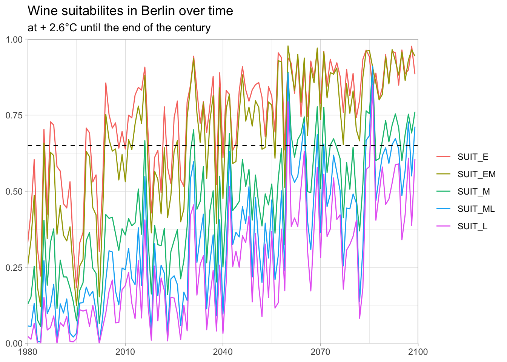